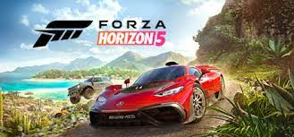

Lenktynių Žaidimai
Lenktynių žaidimai yra žanras, kuriame žaidėjai vairuoja įvairias transporto priemones, konkuruodami lenktynių trasose. Šie žaidimai gali būti labai realistiški arba arkadiniai, suteikiantys adrenalino ir greičio pojūtį. Populiariausi lenktynių žaidimai:
- Forza Horizon - atviro pasaulio lenktynių žaidimas, kuriame žaidėjai gali laisvai tyrinėti kraštovaizdį, dalyvauti lenktynėse ir atlikti įvairias misijas.
- Need for Speed - žaidimų serija, kuri garsėja intensyviomis gatvės lenktynėmis ir gaudynėmis su policija.
- Gran Turismo - realistiškas lenktynių simuliatorius, kuriame žaidėjai gali vairuoti įvairius automobilius ir dalyvauti profesionaliose lenktynėse.
- Mario Kart - arkadinis lenktynių žaidimas, kuriame žaidėjai valdo „Mario“ serijos veikėjus ir dalyvauja smagiose lenktynėse su įvairiais kliūtimis ir ginklais.
Lenktynių žaidimai yra populiarūs tarp greičio mėgėjų ir dažnai turi daugelio žaidėjų režimus, leidžiančius varžytis su draugais ar kitais žaidėjais iš viso pasaulio.